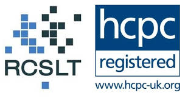

Hi, I'm Sabrina Anderson.
Welcome to Anderson Therapies.
Communication.
Connection.
Belonging.

When people come together around shared values and the things that matter, something unique and lasting happens. People begin to understand one another in new ways, communication becomes something we build together, and lasting change becomes possible.
What I Do
I work alongside organisations and communities to create the conditions where children and young people, together with the people around them, can communicate, connect, and experience a sense of belonging.
My professional background is in speech and language therapy and cognitive behavioural psychotherapy. Today, I work alongside organisations across health, education, local government, and community settings, bringing people together to explore how communication can strengthen relationships, support wellbeing, and create the conditions where children and young people can communicate, connect, and experience a sense of belonging.
Whether working with local partners or international organisations, I bring people together to explore the things that matter for children, young people and communities, develop a shared understanding, and create practical approaches that reflect the strengths, priorities, cultures, and different ways of communicating within each community.
How I Work
Working Together
Designing projects, services, and pathways alongside children, young people, families, practitioners, organisations, and communities, with communication, connection and belonging in mind.
Training Together
Co-producing training, workshops, and learning communities where people can reflect, share ideas, and develop practice together. I also offer supervision and reflective practice for individuals and teams.
Growing Together
Supporting organisations to develop more communication-inclusive ways of working through consultancy, service design, and shared learning.
Understanding Together
Supporting organisations to learn from experience through meaningful conversations, co-produced evaluation, and practical inquiry that helps shape future work.
Together Across Borders
Working alongside local partners in different countries to bring people together around shared values and what matters, creating opportunities to learn with and from one another while being guided by each community's culture, strengths, priorities, and different ways of communicating.
Who I Work With
I enjoy working with organisations that share a commitment to communication, inclusion, and belonging, and who recognise that the interests, voices, and experiences of children and young people matter.
This includes universities, health services, education providers, local and national government, charities, non-governmental organisations (NGOs), professional bodies, community organisations, and international partners.
Let's Start a Conversation
Whether you're developing a new project, strengthening an existing service, creating opportunities for shared learning, or exploring an international partnership, I'd love to hear about what matters to you and your community.
Health Education Local Government Community Settings National Leadership
Registered and accredited with trusted professional bodies.

